Our Projects
Explore our portfolio of stunning landscape designs and transformations.
Featured Projects
Showcasing our finest landscaping transformations across Central Massachusetts
Water Features & Landscaping
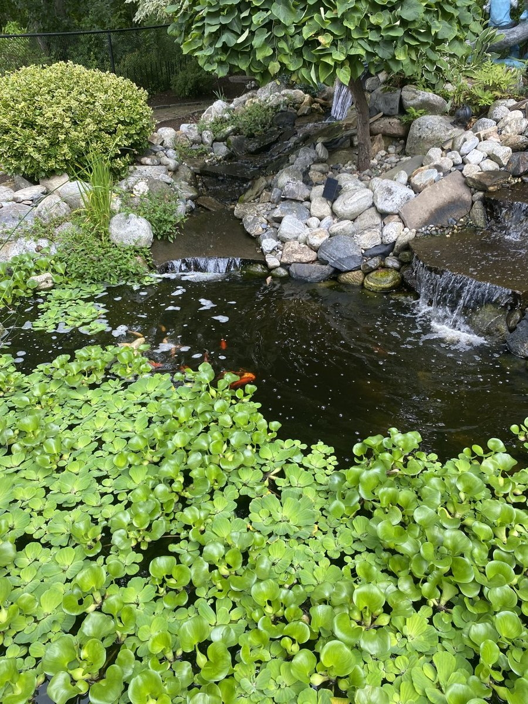
Paver Patios


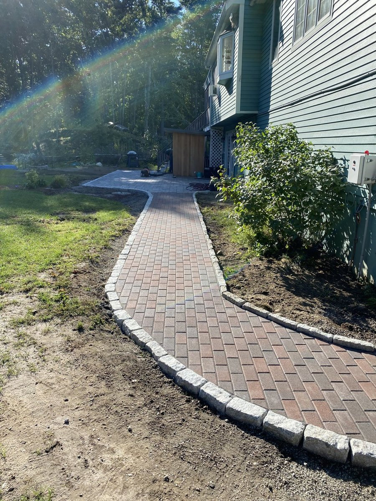
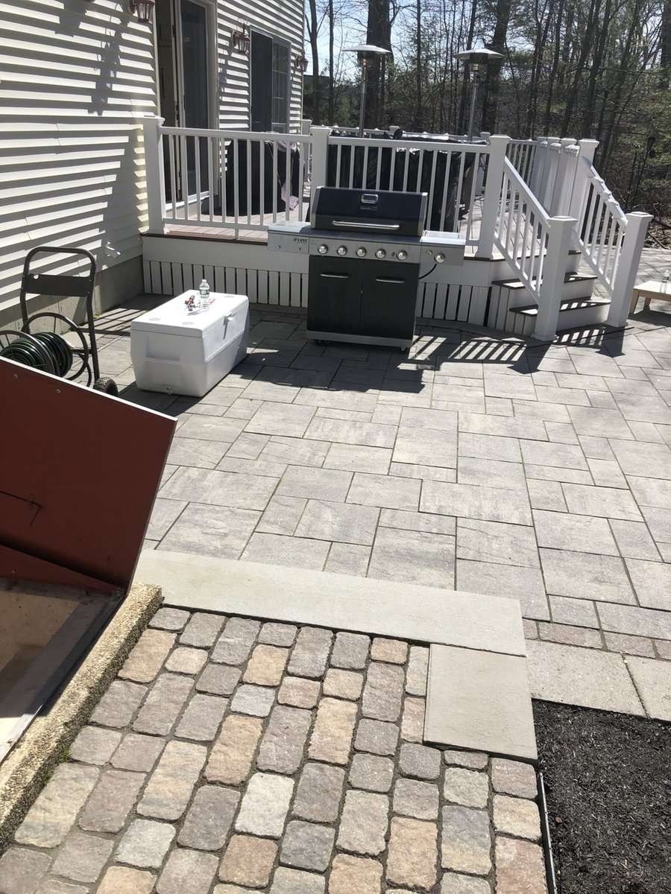

Paver Walkways


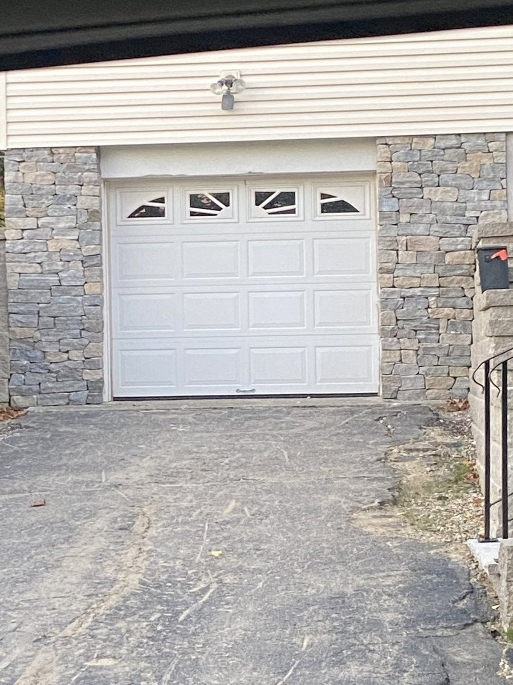
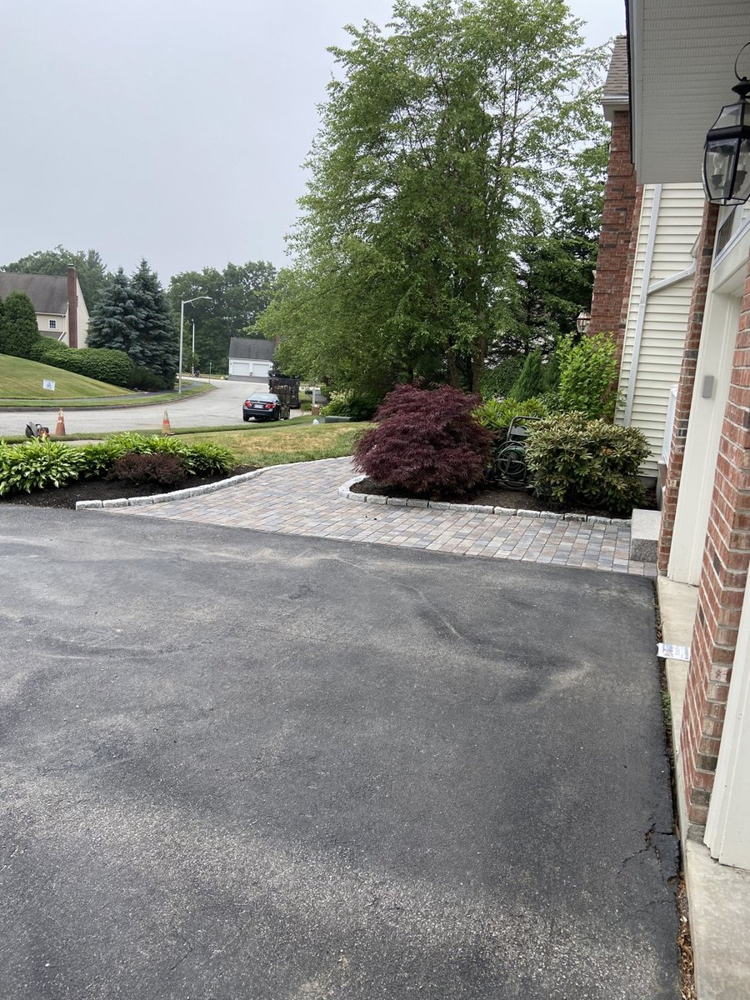


Paver Driveways


Stone Masonry — Steps & Walkways
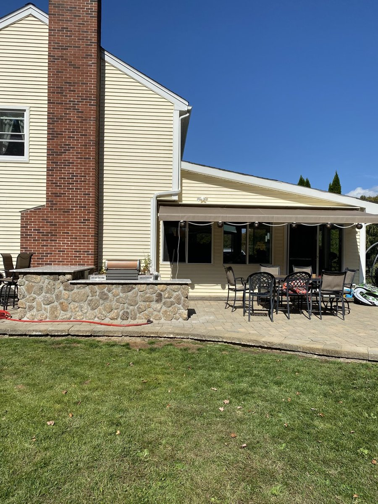
Retaining Walls & Landscape Edging
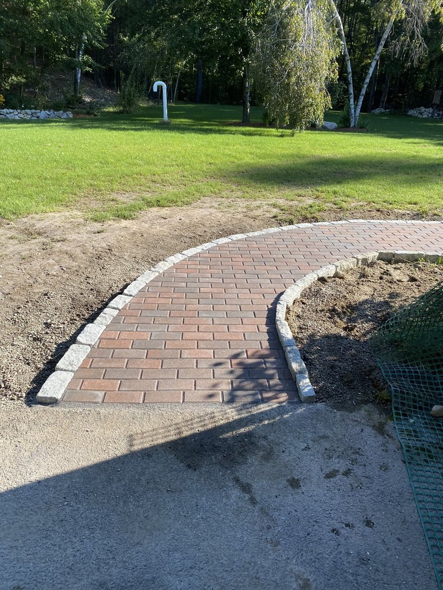
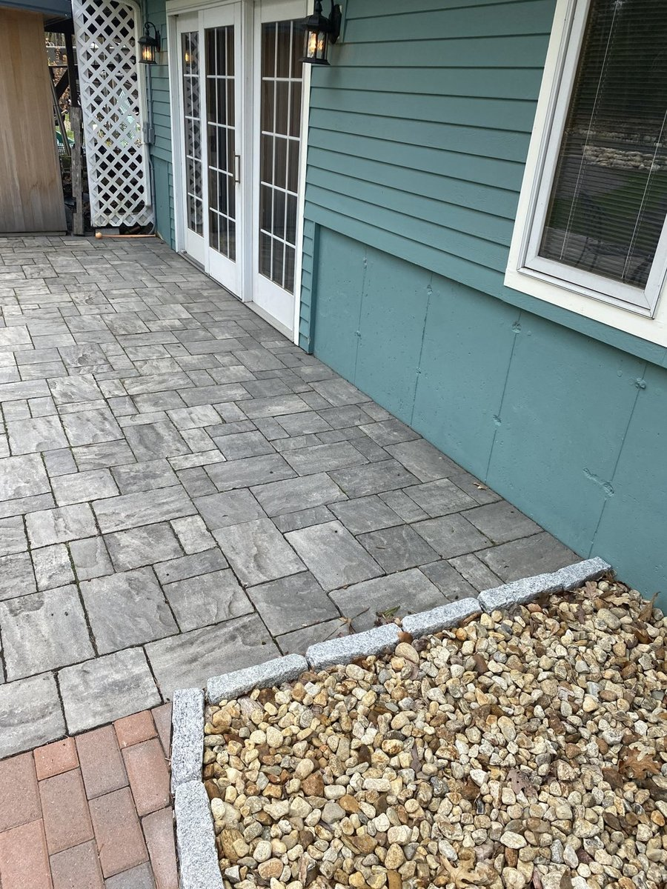
Privacy Hedge Sculpting
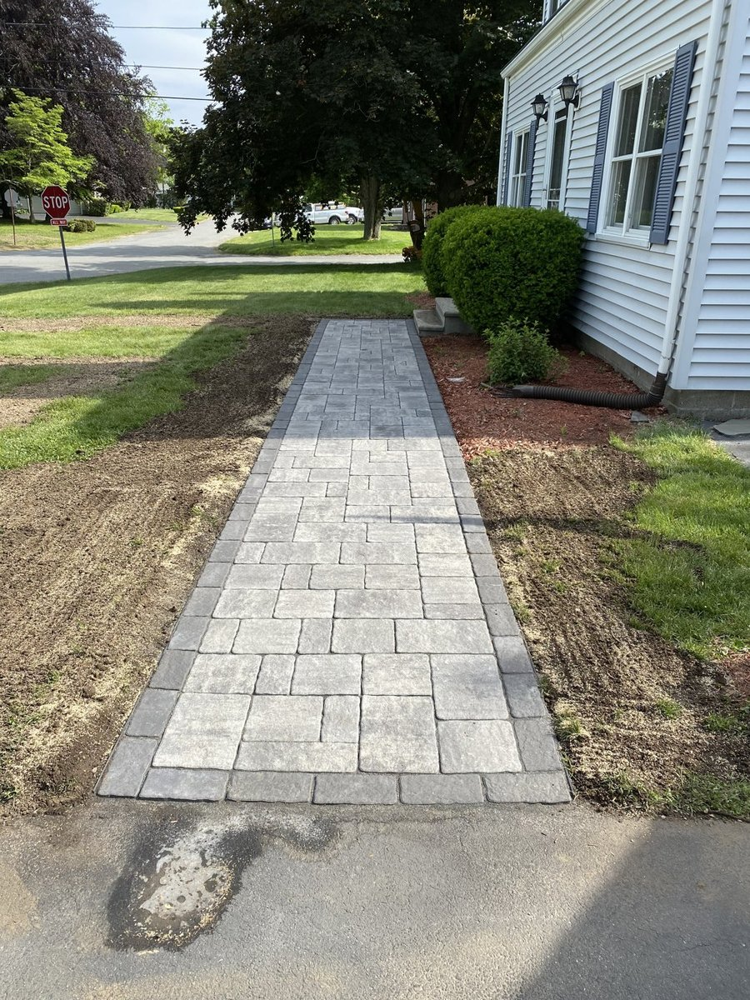
Lawn Care & Property Maintenance
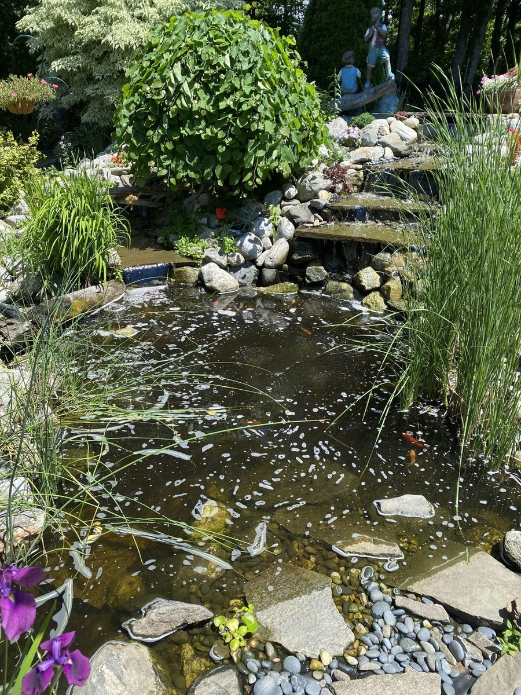
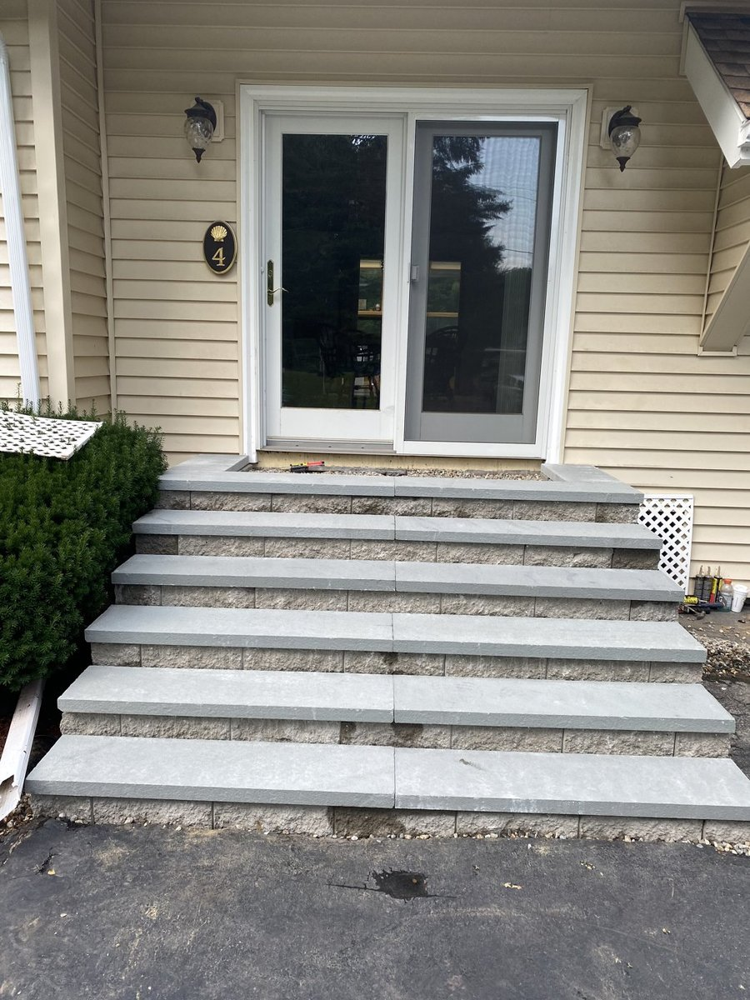
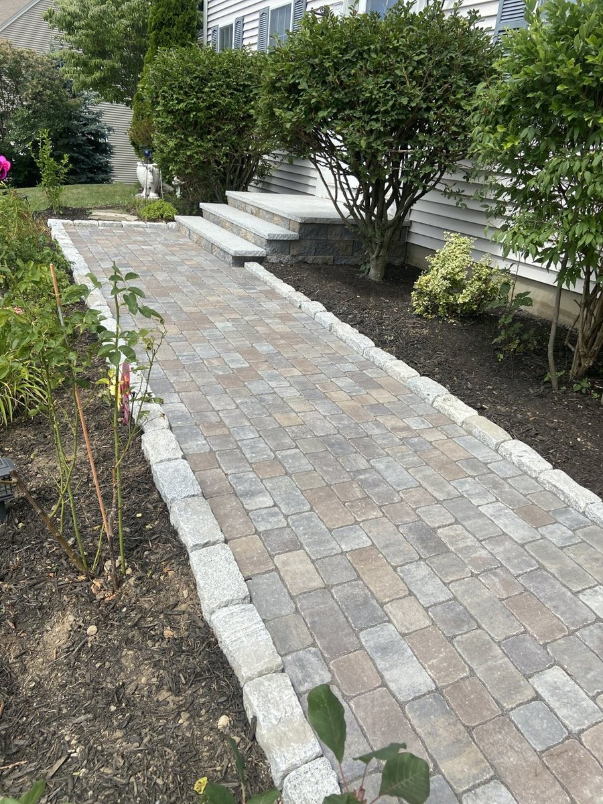


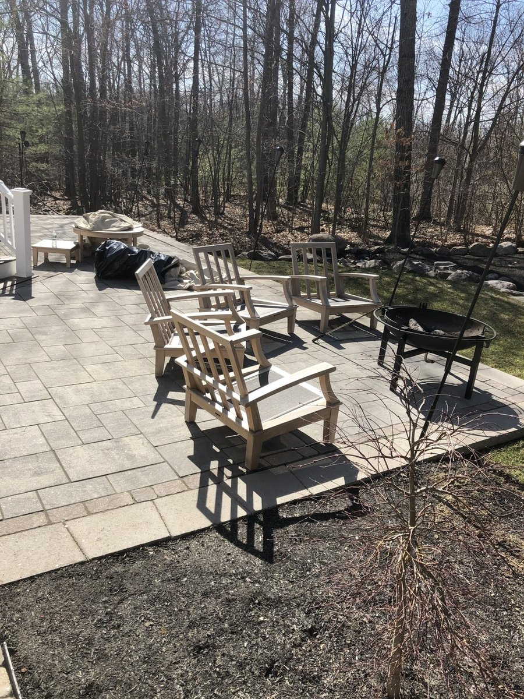